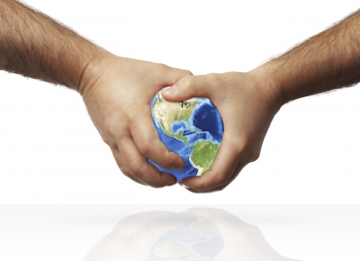

About me |
 I’m Ramu Choudhary, a young 22 year old frontend developer. Currently
creating revolutionizing higher education.
I’m Ramu Choudhary, a young 22 year old frontend developer. Currently
creating revolutionizing higher education.
After learning HTML, CSS, JS and basic Java in my high school, I
discovered my passion is “Creating solutions with technology”. During this
time I worked for Dr. APJ Abdul Kalam’s NGO calledWhat Can I Give. I
left hometown(Jaipur) in 2013 for a 3 year Computer Science
Course((Bachelors of Computer Applications) in Christ University,
Bangalore. After College, joined Playment as Lead Frontend Developer.
There I took ownership and created entire frontend stack for Playment in
React.
ABOUT MY YEARS AS A STUDENT
I’m always been an average student. Science and Arts were my favorite subjects during high school and I had hard time deciding what I want to do after school. In college, I worked more on my interpersonal skills. It was then, I realized I work better as a part of a Team. Curiosity has been my biggest teacher. I explore the internet to learn techniques and best practices, and according to me formal education just slowed this process of self-learning. I spend 80% of my time learning things that interest me. Be it new tools, new languages, frameworks, vanilla code or design practices. The remaining in implementation and taking feedbacks from real users. Sleepless nights for pushing an update, that’s what I live for.
ABOUT ME AND CODIANS
In college, a few of my classmates and me founded a startup called Codians Inc. It was a Web Designing & Development Agency. I co-founded Codians with Fabian Enos, Karan Bhavnani , Aayush Jhunjhunwala. Fabian managed the backend and I designed and coded the frontend. We developed websites for various fests, Android App for CSA (Centre for Social Activities, Christ University) and an Android Game - HowHigh. It helped us earn some extra pocket money. But tour favorite part was developing our own apps. Projects like StudyAlley, ChristCode, Connecto, HowHigh, Bunky and many more were developed under Codians. It also gave me the opportunity to work with some amazing people. They were my true teachers in college and motivated me to explore more. Codians taught me a lot about the Indian startup scenario and its entrepreneurial ecosystem.

ABOUT ME AND THE WEB
I believe that internet will change everything. I already see that happening but in future it will be embedded even deeper in our life. Internet is empowering everything we do, therefore it’s becoming more complex. Users have more options and less patience for the content. For me it is fascinating how all this fits together. And I feel proud every time I open favorite my text editor (Adobe Brackets) and see “Code the Web”.